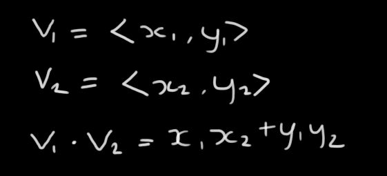
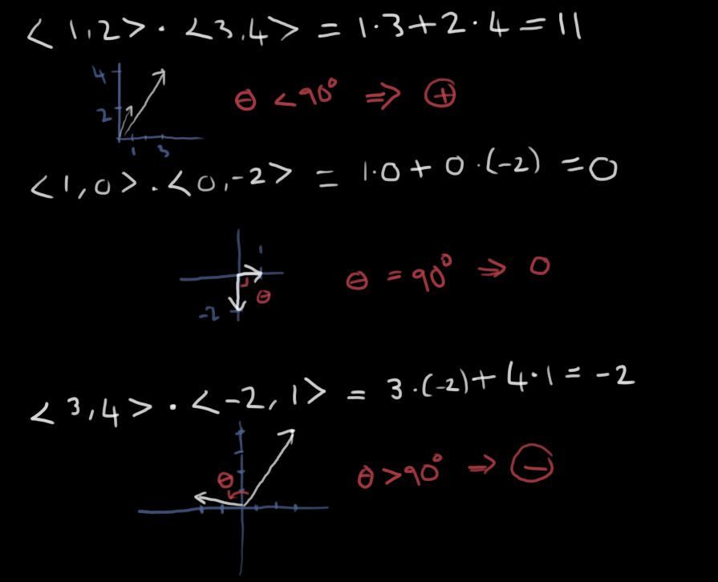
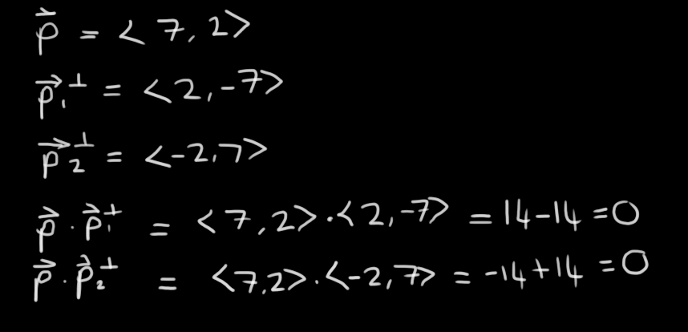
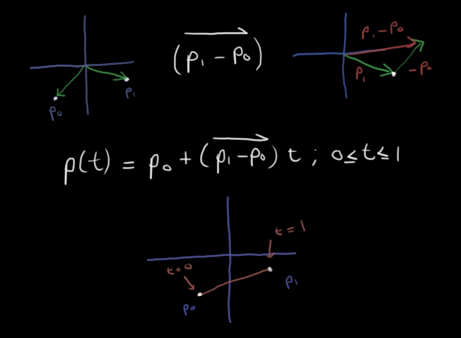
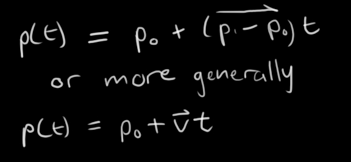
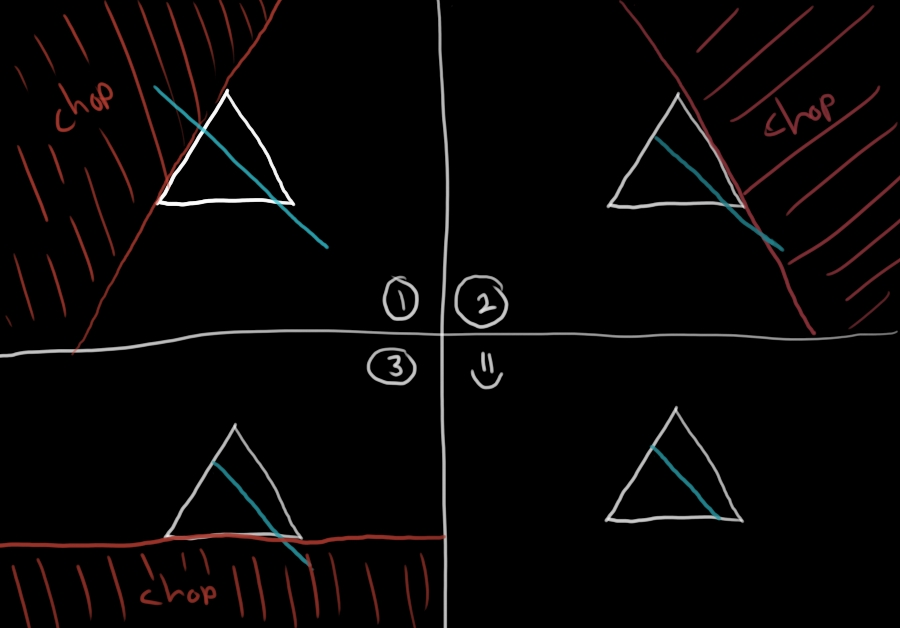
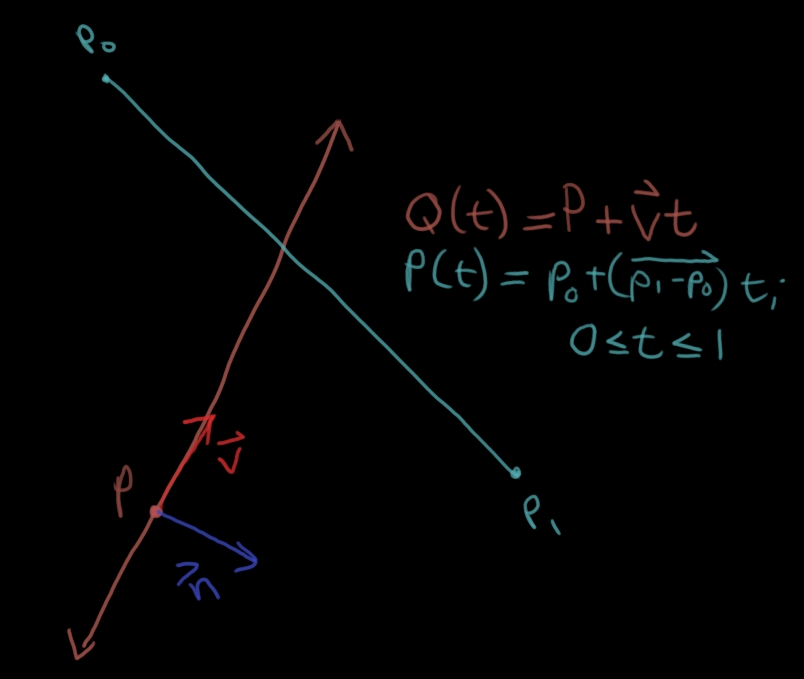
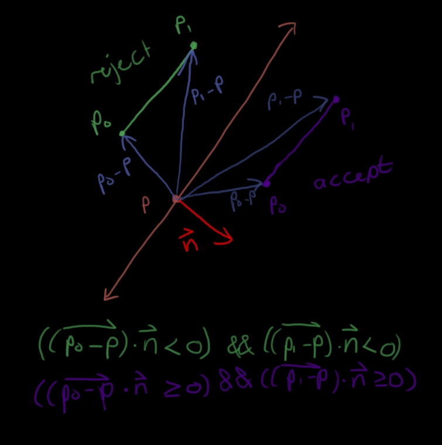
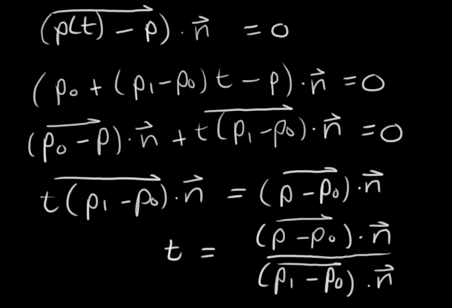
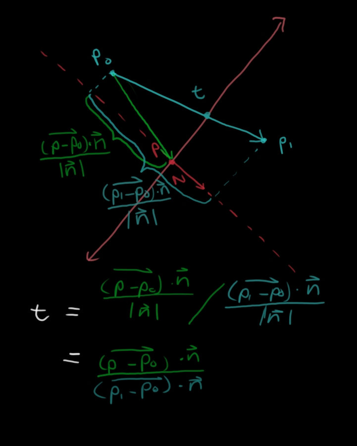

It's surprisingly difficult to find information about how the Cyrus Beck clipping algorithm works so I thought I'd work through trying to undrestand it and then present what I figure out as clearly and concisely as possible. This also means I get to draw stuff which should be fun :D
The most important tool for figuring out Cyrus Beck is the dot product. The mechanics of which are extremely simple:
All you do is multiply componentwise and then add the whole thing up. I like to think of the dot product as a measure of going-in-the-same-directionness. The more two vectors are going in the same direction, the bigger (more positive) the dot product grows. If the two vectors are perpendicular to each other their dot product will be 0. If the two vectors are going in opposite directions, the dot product will be negative.
In 2D, the normal to any vector is just a vector that is perpendicular to that vector. There's two easy ways to get at normal vectors. You just swap the components of the original vector and make one of them negative.
If you think about a vector that points directly upwards, < 0,1 >, then swapping and making what was originally x negative gives you a vector pointing directly right < 1,0 >, and making what was originally y negative gives you a vector that points directly left < -1,0 >.
Let's talk about line segments first. The easiest way to think about line segments is to think about start and end points. But just having a start and end point doesn't give you a line. It gives you two points :P. You want to describe all the points that lie along straight line that stretches from the start point to the end point. If you can get at a vector that tells you, given one point, the direction of the other point, you can quite easily describe a line segment in terms of the first point and that vector. You can get this vector by subtracting the start point from the end point. This gives you a vector that, when added to the starting point, will give you the ending point. That's really useful because now if you scale that vector from 0 to 1 times its length you have every point between the start and end points and thus you have a line segment.
A line can be similarly described by simply removing the restriction on the scaling factor, t.
Disclaimer: I'm totally making assumptions about what Cyrus Beck does since nobody bothers to properly define the algorithm anywhere.
The best way to think about cyrus beck is to imagine you've drawn a polygon on a piece of paper and you'd like to cut out that polygon with a guillotine. You iterate over all the line segments in the polygon and cut along the entire length of the line until the edge of the paper for each side. Once you've done all sides you have your polygon and nothing else. This also helps with thinking about why the algorithm is for convex polygons. If you're cutting along a concave polygon things become a little more complicated because if you used the same technique you'd chop up the shape you just drew.
With this mental model in place, the entire algorithm boils down to a problem involving a line (the one you chop along) and a line segment (the line you'll probably have to chop). You also need some way to know, given your line, which side of that line you want to keep and which side you want to throw away. That's where normals come in. I'll be using normals that point into the shape. So the entire problem looks like this:
You can use the normal to figure out which side of the line the points p0 and p1 are. If they're both outside the line then you can immediately reject the line segment and if they're both inside you don't need to do anything else for that iteration. To figure that out you get vectors from the point P to p0 and p1 and get the dot product of each of those with the normal vector. If the point is on the line the dot product will be 0, if it's outside it will be negative and if it's inside it will be positive.
(Note: The normal vector was feeling cold so it changed colour. Totally not a mistake.) Finally there's the interesting case to take care of when one point is on the inside of the line and the other is outside. We need to find the point where the line and line segment intersect and then clip the line segment so that the inside remains and the outside is discarded.
To find the point where the line and line segment interset we must solve for the point on the line segment where the vector from P to that point dotted with n is 0. So we have:
ASIDE: I find it interesting to try and think about where this expression comes from. I think it's the ratio of the scalar projections of the two vectors onto n. So basically the ratio of these lengths is what we're calculating:
So now we know where t is but we need to decide which side of the line segment must be discarded. This is the only really well-documented part of the entire algorithm. You take the dot product of (p1 - p0) and n. If it's positive the segment is entering and we need to move the lower bound of the 0 <= t <= 1 boundary up to our t value. If it's negative then we need to move the upper bound down. If we ever find that the lower bound is bigger than the upper bound we can reject the line.